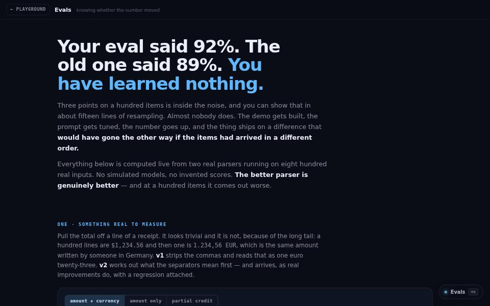

machine learning · about 5 min · The Observatory Reach
Evals
Two real parsers, eight hundred real inputs, graded live — and the confidence interval that decides whether the change was real.

The problem
“92% versus 89%” gets shipped as an improvement when it is noise.
What it does
- Two real parsers graded live on 800 real inputs
- Bootstrap and Wilson intervals, McNemar’s test and power analysis
- Drag the sample size and watch a difference stop being real
The most interesting decision
Real systems, not a random number generator
Most eval write-ups fake the model, which skips the hard half. Here both systems are real programs, and a test checks that the 95% interval really contains the truth about 95% of the time.
Built with
- Percentile bootstrap
- Wilson intervals
- McNemar exact test
- Power analysis
Evidence
Two real parsers on 800 real inputs, graded live, with 44 tests. Read its tests
Its world
A balance on a hill shaped like a bell curve, still deciding which side is heavier.